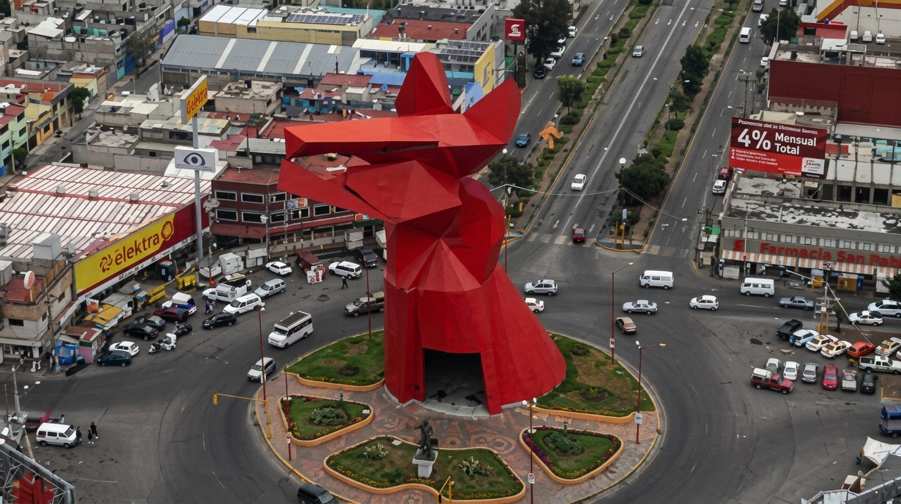

Este Sistema de Información Geográfica Web analiza la accesibilidad al transporte público masivo en los municipios de Ecatepec de Morelos y Nezahualcóyotl. Mediante herramientas de análisis espacial se evalúa la proximidad de la población a las estaciones de Metro, Metrobús y Mexibús, identificando distintos niveles de accesibilidad territorial.
La accesibilidad al transporte público influye directamente en las oportunidades de la población para acceder a empleo, educación y servicios. Aunque Ecatepec y Nezahualcóyotl cuentan con sistemas de transporte masivo, existen diferencias territoriales que no son evidentes a simple vista. Por ello, se realizó un análisis a escala de manzana censal para identificar qué sectores presentan mayores desventajas de accesibilidad y representar estos resultados mediante un SIG Web.
Analizar la accesibilidad al transporte público masivo en Ecatepec de Morelos y Nezahualcóyotl mediante el estudio de la proximidad entre la población y las estaciones de Metro, Metrobús y Mexibús, identificando desigualdades espaciales en el acceso a estos sistemas de transporte.
La investigación permite comprender cómo se distribuye territorialmente el acceso al transporte público masivo, identificar zonas con condiciones de mayor desventaja y generar información útil para la movilidad urbana, la planeación territorial y futuros estudios relacionados con la accesibilidad y la justicia espacial.
El análisis integró información demográfica, territorial y de transporte público para evaluar la accesibilidad al transporte masivo en el área de estudio.
Sistema ferroviario urbano de la Ciudad de México que conecta múltiples zonas de la Zona Metropolitana del Valle de México.
Sistema BRT de la Ciudad de México que articula corredores estratégicos de movilidad y facilita la conexión intermunicipal.
Sistema BRT del Estado de México que conecta Ecatepec, Nezahualcóyotl y otros municipios metropolitanos.
Imagen de referencia utilizada con fines académicos. Créditos a sus autores originales.
Uno de los municipios más poblados del país y un importante nodo de movilidad metropolitana dentro de la Zona Metropolitana del Valle de México.

Imagen de referencia utilizada con fines académicos. Créditos a sus autores originales.
Municipio caracterizado por una elevada densidad urbana y una fuerte interacción funcional con la Ciudad de México mediante distintos sistemas de transporte público.
Se utilizaron datos de población, vivienda y manzanas censales.
Integración y procesamiento de la información geográfica.
Distancias de 500 m, 1000 m y 1500 m alrededor de estaciones.
Publicación de resultados en un visor cartográfico interactivo.
Cortés Olivares Ángel Alberto
Licenciatura en Geografía Aplicada
Escuela Nacional de Ciencias de la Tierra
Universidad Nacional Autónoma de México
angel.cortes@encit.unam.mx
Accede al Sistema de Información Geográfica Web para consultar la distribución espacial de la accesibilidad al transporte público masivo.
ACCEDER AL VISOR